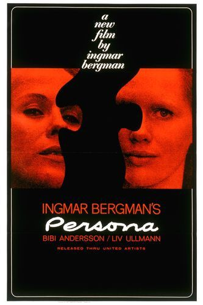

Fiche technique

Synopsis
En pleine représentation d'Électre, la comédienne Elisabet Vogler est saisie d'un mutisme soudain et total. Après un séjour à l'hôpital, sa doctoresse la confie à une jeune infirmière, Alma, et les envoie toutes deux se reposer dans une maison isolée au bord de la mer[2]. Face au silence obstiné d'Elisabet, Alma comble peu à peu le vide en se confiant sans retenue — jusqu'à raconter un épisode intime de sa vie qu'elle regrettera d'avoir partagé. La découverte d'une lettre où Elisabet livre un jugement cruel sur sa patiente fait basculer la relation : la confiance se change en rivalité, puis en une confusion croissante entre les deux femmes, dont les visages, les voix et les souvenirs finissent par se superposer sans que le film tranche jamais entre hypothèse clinique, vision et réalité.
Contexte de production
Au printemps 1965, Bergman est hospitalisé au Sofiahemmet de Stockholm pour une double
pneumonie compliquée d'une infection de l'oreille interne[10]. Il doit abandonner un
projet de grande envergure pour la Svensk Filmindustri, Les Mangeurs d'hommes, déjà
en préparation avec Bibi Andersson et un petit rôle prévu pour la jeune Liv Ullmann[10].
Alité, feuilletant la presse, il tombe sur deux photographies des actrices et reste frappé
par la ressemblance de leurs visages sous un éclairage particulier[3]. De cette
obsession naît, en quatorze jours d'écriture à raison d'une heure par jour, le scénario d'un
film à équipe réduite qu'il baptise d'abord Kinematograf[10]. Bergman
dira plus tard : Persona m'a sauvé la vie
[13].
Le tournage commence en studio à Stockholm le 19 juillet 1965 avant de se poursuivre sur
l'île de Fårö, où Bergman s'installera ensuite définitivement, et s'achève le 15 septembre
de la même année[4]. Le patron de la Svensk Filmindustri, Kenne Fant, ayant jugé
« triste » le titre Kinematograf, Bergman lui substitue Persona, du latin
désignant le masque de théâtre antique[4]. Bergman présentera le film à la presse
comme une sonate pour deux instruments
[19], construite autour d'Alma et
d'Elisabet.
Structure narrative
Le film s'ouvre et se referme sur l'image d'un projecteur qui s'allume puis s'éteint, encadrant tout le récit comme la projection d'une pellicule et non comme une histoire racontée de l'extérieur[7]. Entre ces deux bornes, un prologue de sept minutes juxtapose sans dialogue une série d'images disjointes — dessin animé, mise à mort d'un agneau, clou enfoncé dans une paume, corps à la morgue — avant qu'un jeune garçon ne se réveille et caresse un écran où se dessine un visage de femme flou[16].
Passé ce prologue, le récit progresse par doublements plutôt que par enchaînement causal : le long monologue où Alma imagine la vie sexuelle et familiale d'Elisabet est filmé et rejoué deux fois à l'identique, une première fois cadré sur le visage d'Elisabet, une seconde sur celui d'Alma[19]. Au point de bascule du film, vers la quarante-quatrième minute, la pellicule elle-même semble se déchirer et brûler, comme si le support ne supportait plus la tension entre les deux personnages[11] — avant qu'un ultime segment ne montre l'équipe de tournage filmant la scène, brouillant définitivement la frontière entre le dispositif et la fiction[18].
Mise en scène et procédés techniques
Sven Nykvist tourne en noir et blanc au format standard, privilégiant un éclairage
indirect et diffus, dit « en rebond », qui module la lumière selon chaque visage plutôt que
selon une formule fixe[21]. Cette approche, déjà éprouvée sur les films en noir et
blanc du début des années 1960, culmine ici dans des gros plans extrêmes destinés, selon les
mots mêmes du directeur de la photographie, à laisser voir ce qui se passe derrière les
yeux
de chaque actrice[22].
Plusieurs effets sont obtenus directement en tournage ou au montage : une scène utilise de la fumée et un miroir pour brouiller le cadre, tandis que l'image la plus célèbre du film — un visage composite, moitié Bibi Andersson, moitié Liv Ullmann — naît d'une idée de Bergman en salle de montage ; aucune des deux actrices, à la première projection, ne s'y reconnaîtra[5]. La scène où le film semble prendre feu inquiète à ce point les projectionnistes lors des premières séances que les bobines doivent être marquées d'une étiquette rouge garantissant que la pellicule ne brûle pas réellement[4].
Le prologue contient également un photogramme quasi subliminal — trois images sur les quelque cent vingt mille que compte le film, soit environ un huitième de seconde — montrant un sexe masculin en érection, découvert par la critique bien après la sortie du film[17]. Associé à des images d'archives — un bonze s'immolant au Sud-Vietnam, une photographie de la rafle du ghetto de Varsovie — ce montage introduit d'emblée une violence historique et politique dans un film par ailleurs resserré sur deux femmes et une maison isolée[2].
Personnages
Alma
Bibi AnderssonJeune infirmière loquace, chargée de veiller sur Elisabet ; le silence de sa patiente la pousse à une confession de plus en plus intime, jusqu'à un geste d'automutilation qui signe la perte de ses propres repères.
Elisabet Vogler
Liv UllmannActrice de théâtre célèbre, mutique depuis une représentation d'Électre ; son silence, jamais expliqué cliniquement, devient un miroir qui absorbe la parole d'autrui.
La doctoresse
Margaretha KrookSeule instance extérieure à formuler une hypothèse sur l'état d'Elisabet, avant de disparaître du récit et de laisser les deux femmes seules face à elles-mêmes.
M. Vogler
Gunnar BjörnstrandMari d'Elisabet, dont l'apparition brève entretient l'ambiguïté sur l'identité de la femme à qui il s'adresse — Elisabet, ou déjà Alma dans son rôle.
Le garçon
Jörgen LindströmFigure muette du prologue et de l'épilogue, dont le geste — caresser un écran où flotte un visage de femme indistinct — encadre tout le film comme une question sans réponse.
Thèmes
- Le masque et l'identité. Persona, masque de théâtre en latin, renvoie à la notion jungienne de persona comme façade sociale opposée au moi intérieur[19] — une ambivalence que le français redouble, où « personne » désigne à la fois quelqu'un et l'absence de quiconque.
- La fusion et la vampirisation. Le rapport entre les deux femmes est décrit par la critique comme une contamination réciproque, presque vampirique, où chacune finit par parler d'elle-même en croyant parler de l'autre[1].
- La maternité refusée. Alma reproche à Elisabet d'avoir désiré la mort de son enfant ; Elisabet, en retour, ravive chez Alma la culpabilité liée à son propre avortement — deux versions d'une même peur de la maternité[11].
- Le cinéma comme sujet du film. Premier et dernier titre du projet, Kinematograf encadre littéralement Persona ; l'appareil de projection, la pellicule qui brûle et l'équipe de tournage filmée à la fin rappellent sans cesse que l'on regarde une construction, non une confession directe[7].
- L'intrusion de l'Histoire. Les images du bonze immolé et du ghetto de Varsovie, insérées dans un huis clos intime, posent la question de la responsabilité de l'artiste face aux catastrophes collectives dont il se tient, par son art, à distance[2].
Réception critique et postérité
Accueilli favorablement dès sa sortie suédoise, le film inspire à la presse locale le néologisme Person(a)kult pour désigner ses admirateurs les plus enthousiastes[1]. Il remporte le prix du meilleur film à la 4e cérémonie des Guldbagge et devient le film proposé par la Suède à l'Oscar du meilleur film en langue étrangère[1]. En France, les Cahiers du cinéma le classent en tête de leur liste des dix meilleurs films de l'année 1967 et le qualifient du plus beau film de Bergman[1][14], tandis que Susan Sontag lui consacre, dans Sight and Sound, un essai qui restera l'une des lectures critiques les plus citées du film[6].
L'accueil américain est plus disparate : certains organes qualifient le film, dans un registre hostile, de simple film sur le lesbianisme[14], tandis que la censure exige la suppression du photogramme incriminé aux États-Unis et au Royaume-Uni, ainsi que des coupes dans le sous-titrage du monologue d'Alma — éléments rétablis lors des restaurations en langue anglaise de 2001[1][18]. Sur le plan commercial, Persona reste un échec relatif tant en Suède qu'aux États-Unis, où sa diffusion se limite à quelques salles[18].
La réputation du film n'a cessé de croître depuis : cinquième film de tous les temps au sondage de la critique Sight and Sound de 1972 — la meilleure place jamais obtenue par un film suédois — puis dix-septième en 2012 et dix-huitième en 2022[15]. Il recueille aujourd'hui 91 % d'avis favorables sur Rotten Tomatoes et un score de 86 sur 100 sur Metacritic[1], et figure en sixième position du classement des cent plus grands films en langue étrangère établi par la BBC en 2018[1].
Son influence traverse plusieurs générations de cinéastes : Robert Altman s'en inspire pour Images (1972) puis 3 Women (1977)[1], Jean-Luc Godard en détourne le monologue d'Alma dans Week-end (1967)[1], Woody Allen y fait référence dans Guerre et Amour (1975) et Stardust Memories (1980)[19], et David Fincher reprend la pellicule qui brûle ainsi que le photogramme subliminal dans Fight Club (1999)[14]. La parenté avec Mulholland Drive (2001) de David Lynch, construit lui aussi sur la fusion de deux identités féminines, est largement commentée par la critique universitaire[24].
Conclusion
Né d'un effondrement physique et d'une obsession pour deux visages photographiés côte à côte, Persona transforme sa propre genèse en méthode : un film sur la difficulté de distinguer un être d'un autre, qui refuse lui-même de distinguer clairement projection et confession, dispositif et vérité. Sa radicalité formelle — prologue sans récit, monologue dédoublé, pellicule qui se déchire, tournage exhibé — ne se referme jamais sur une explication unique, ce qui explique à la fois la richesse ininterrompue de ses lectures critiques et l'exigence qu'il impose à qui le regarde. Bergman affirmait avoir touché, avec ce film, des secrets sans mots que seul le cinéma peut découvrir : plus d'un demi-siècle et plusieurs générations de cinéastes plus tard, Persona continue moins à se laisser comprendre qu'à se laisser habiter.
Sources
- Wikipedia (EN), « Persona (1966 film) » — en.wikipedia.org/wiki/Persona_(1966_film)
- Wikipédia (FR), « Persona (film) » — fr.wikipedia.org/wiki/Persona_(film)
- AlloCiné, fiche film et genèse — allocine.fr/film/fichefilm_gen_cfilm=4397
- Ingmar Bergman Foundation, « Persona » (production notes) — ingmarbergman.se/en/production/persona
- The Criterion Collection, « 10 Things I Learned: Persona » — criterion.com/current/posts/5596
- Cinephilia & Beyond, « Persona: Ingmar Bergman's Psychological Masterpiece » (essai de Susan Sontag) — cinephiliabeyond.org
- Cinemontage, « Persona (1966) » — cinemontage.org/persona-1966
- KinoScript, « Persona – Ingmar Bergman » — kinoscript.com/persona-ingmar-bergman
- Cinéma en déconstruction, « Persona (Ingmar Bergman, 1966) » — cinemadecons.fr
- TroisCouleurs, « Persona : le film de Bergman réinterprété par l'IA » — troiscouleurs.fr
- TroisCouleurs, « Autour de Persona, un film inspiré et inspirant » — troiscouleurs.fr/video-autour-de-persona
- Ciné-club de Caen, « Sight and Sound : meilleurs films de tous les temps » — cineclubdecaen.com
- 366 Weird Movies, « 139. Persona (1966) » — 366weirdmovies.com
- Manchester Hive, « Persona's penis », in Ingmar Bergman — manchesterhive.com
- Reelviews, critique de Persona — reelviews.net/reelviews/persona
- BFI, « Persona: 5 films inspired by Ingmar Bergman's masterpiece » — bfi.org.uk
- American Society of Cinematographers, « ASC Salutes Sven Nykvist » — theasc.com/articles/asc-salutes-sven-nykvist
- Wolfcrow, « Understanding the Cinematography of Sven Nykvist » — wolfcrow.com
- Université de Leiden, « Us, We, Me, I: The Artifice of Identity and Film in Persona, 3 Women, and Mulholland Drive » (mémoire) — studenttheses.universiteitleiden.nl
- IMP Awards, affiche du film — impawards.com/1967/persona.html